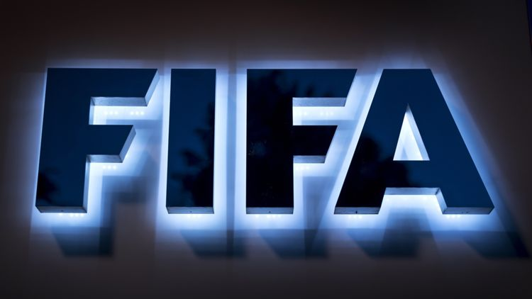

El Mundial 2026 de la FIFA contará con 104 partidos y no hay duda de que algunos de ellos tendrán un lugar en la historia del torneo. A lo largo de los últimos 96 años y las 22 ediciones de la competición, muchos encuentros han quedado grabados en la memoria del fútbol. En la cita mundialista todo puede pasar y, ya sean resultados inesperados o remontadas increíbles, la historia lo ha demostrado una y otra vez. Pero, ¿cuáles han sido las mejores remontadas en la historia de los Mundiales? Sigue leyendo para descubrir todo lo que debes saber sobre esos partidos que ayudaron a construir la leyenda del torneo.
Alemania Occidental 3-2 Hungría, final del Mundial de 1954 Esta remontada en una final del Mundial fue tan impactante que incluso recibió su propio apodo: el Milagro de Berna. Frente a una Hungría que llegaba invicta en 31 partidos, incluyendo un triunfo 8-3 sobre los propios alemanes apenas unas semanas antes, Alemania del Oeste llegó a la final del Mundial 1954 como el equipo menos favorito.